Geometrische Bearbeitung¶
Geometrie erstellen¶
199 - Parallelität¶
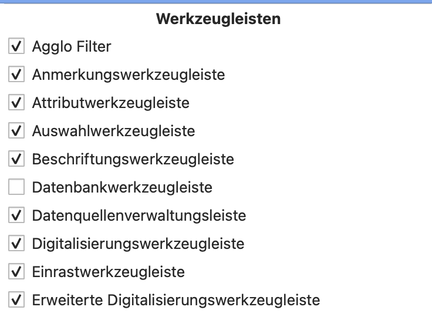 |
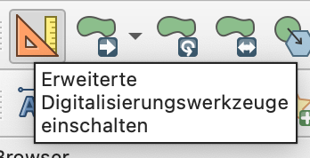 |
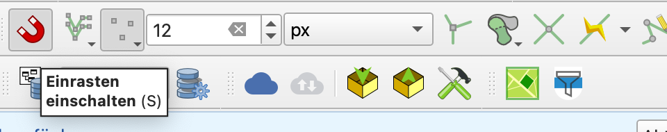  |
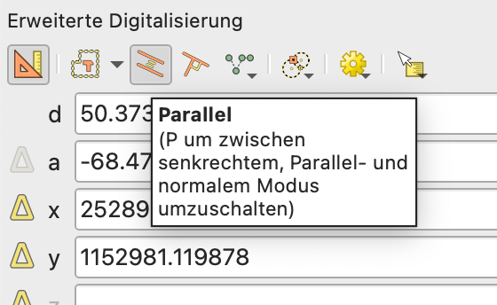 |
Werkzeugleisten “Erweiterte Digitalisierungswerkzeugleiste” und “Einrastwerkzeuge” aktivieren.
Im Editiermodus das Werkzeug “Objekt hinzufügen” auswählen und die erweiterten Digitalisierungswerkzeuge einschalten.
Snapping aktivieren, damit ein Segment ausgewählt werden kann, zu welchem parallel gezeichnet wird. Parallel zeichnen auswählen.
200 - Frei gewählte Punkte¶
Auf Punktlayer den Editiermodus einschalten. Das Werkzeug “Punktobjekt hinzufügen” auswählen. Auf der Karte mit einem Klick einen neuen Punkt erstellen.
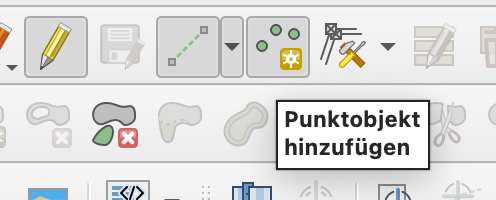
201 - Richtung¶
In den erweiterten Digitalisierungswerkzeugen kann ein Winkel (Richtung) vorgegeben werden. Fürs direkte Zeichnen oder als Konstruktionslinie.
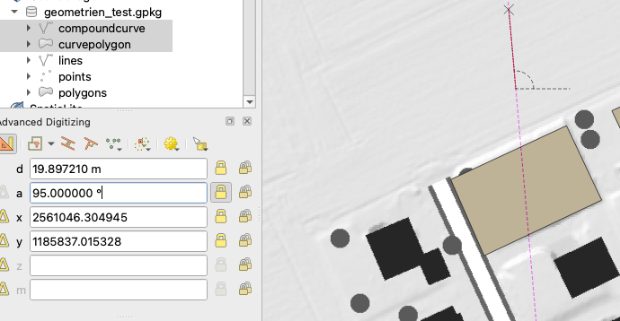
202 - Abstandsangaben¶
In den erweiterten Digitalisierungswerkzeugen kann ein Abstand vorgegeben werden. Fürs direkte Zeichnen oder als Konstruktionslinie.
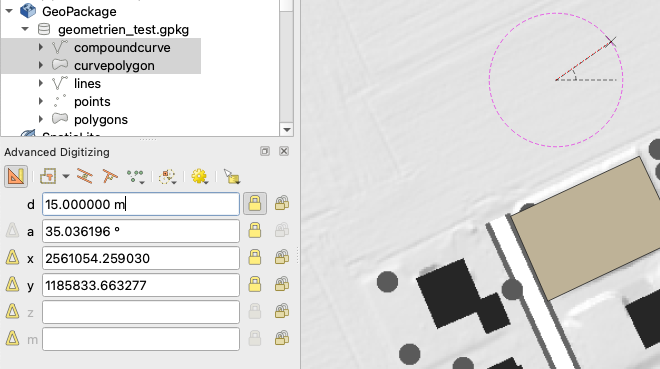
203 - Richtung und Abstand¶
Eine Kombination aus Richtung und Abstand ist möglich - fürs direkte Zeichnen oder als Konstruktionslinie.
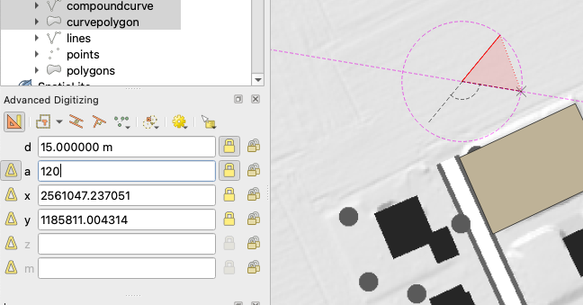
204 - Kreisbogen über Radius/Mittelpunkt oder zwei Bogenpunkte¶
Mit der “Werkzeugleiste für Formen” können Kreise über Radius und Mittelpunkt oder zwei Bogenpunkte erstellt werden. Die gleiche Funktion ist für Kreisbögen nicht verfügbar.
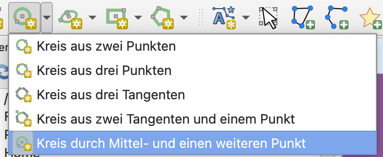
Kreisbögen können in der “Werkzeugleiste für Formen” mit zwei Bogenpunkten und der Angabe des Radius erstellt werden.
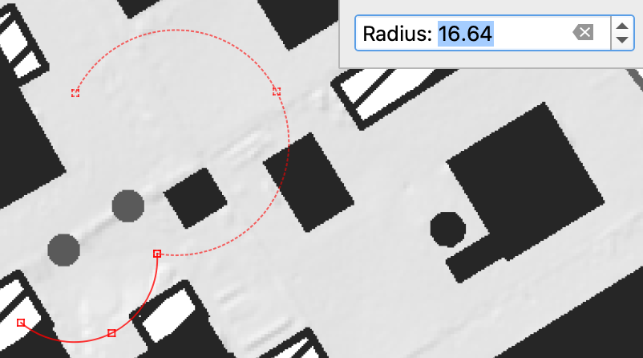
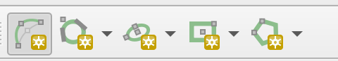
205 - Kreisbogen über drei Punkte¶
Mit der Standard “Digitalisierungswerkzeugleiste” und der Einstellung “mit Kurven digitalisieren” wird der Kreisbogen wird über 3 Punkte gezeichnet.
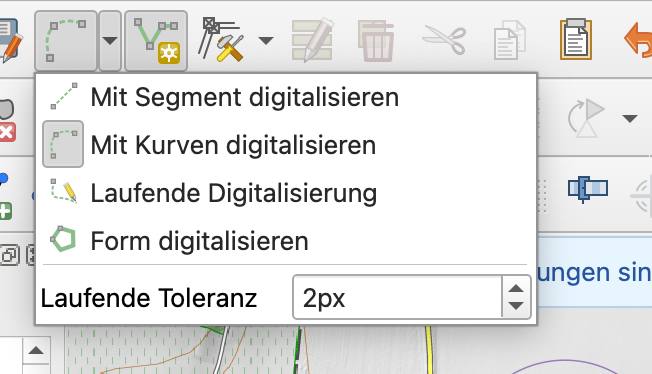
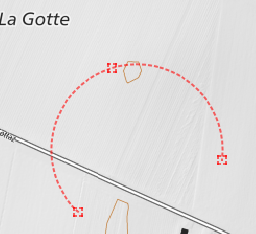
209 - Bestehende Geometrien kopieren¶
Zu kopierendes Feature in der Attributtabelle des Layers selektieren und Ctrl-C.
Ziellayer in Editiermodus schalten und die entsprechende Attributtabelle öffnen. Anschliessend Ctrl-V und die nötigen Attributwerte anpassen > Speichern.
211 - Punktimport (Geometrie)¶
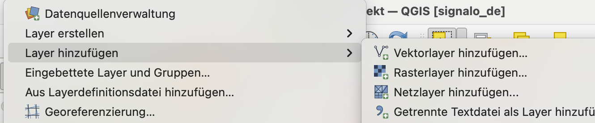
Menu Layer > Layer hinzufügen und Typ auswählen:
Vektorlayer, Getrennte Textdatei, PostgreSQL-Layer, GPX-Layer, … hinzufügen.
Ein Layer kann auch über Drag&Drop ins QGIS-Projekt gezogen werden.
211.1 - Überlappung automatisch vermeiden¶
In der Einrastwerkzeugleiste das “topologische Editieren” aktivieren und die Überlappungsregeln festlegen.
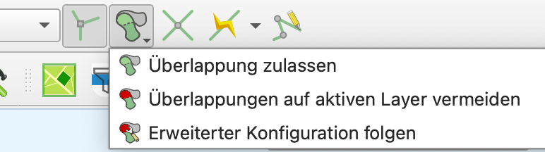
Bei der erweiterten Konfiguration können die Überlappungsregeln pro Layer individuell festgelegt werden.
215 - Verlängerung: frei¶
Mit dem Stützpunktwerkzeug kann eine Geometrie frei verlängert werden.
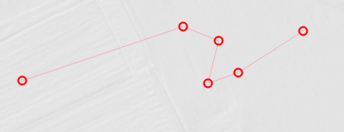
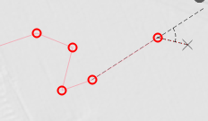
216 - Verlängerung nach Abstandsangabe¶
Mit Stützpunktwerkzeug und den erweiterten Digitalisierungswerkzeugen kann eine Geometrie um einen bestimmten Abstand verlängert werden.
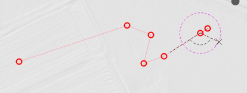
217 - Verlängerung bis zu Schnittpunkt¶
“Objekt abschneiden/verlängern Werkzeug” aktivieren. Wichtig: Einrasten muss auf alle Layer und Segmente aktiviert sein.
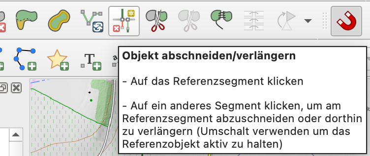
Oder
In der Einrastwerkzeugleiste das Einrasten auf Schnittpunkte aktivieren.
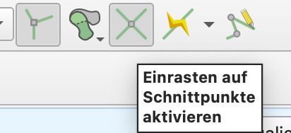
Mit den erweiterten Digitalisierungswerkzeugen den Parallelmodus aktivieren und auf der bestehenden Linie anwenden um den letzten Knotenpunkt bis zum Schnittpunkt zu verlängern oder verkürzen.
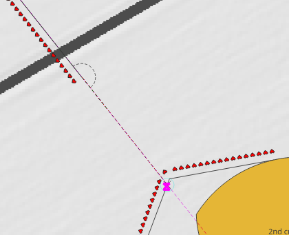
218 - Trimmung: frei¶
“Objekt abschneiden/verlängern Werkzeug” aktivieren.
219 - Trimmung nach Abstandsangabe¶
Mit dem Stützpunktwerkzeug und den erweiterten Digitalisierungswerkzeuge kann eine Geometrie um einen bestimmten Abstand getrimmt werden.
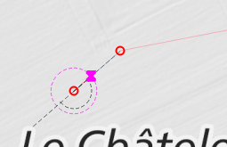
220 - Trimmung bis zu Schnittpunkt¶
“Objekt abschneiden/verlängern Werkzeug” aktivieren. Wichtig: Einrasten muss auf alle Layer und Segmente aktiviert sein.
221 - Drehen¶
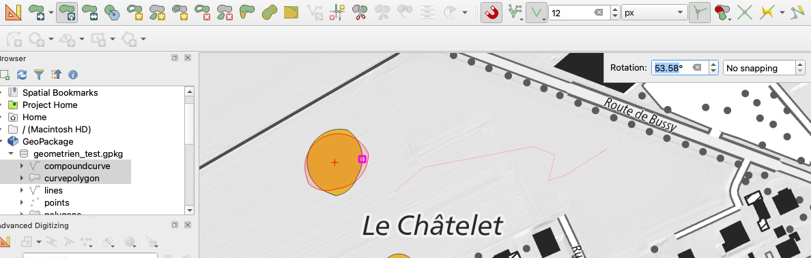
Erweiterte Digitalisierungswerkzeuge > Drehen.
222 - Verschieben¶
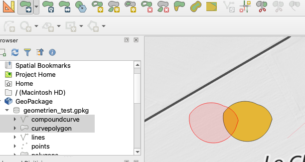
Erweiterte Digitalisierungswerkzeuge > Verschieben.
223 - Fortsetzen¶
Gerade beliebig fortsetzen. Mit dem Stützpunktwerkzeug ans Ende einer Linie, auf das “+” klicken und Linie fortsetzen.
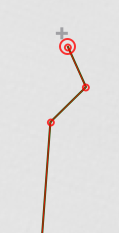
224 - Stützpunkt löschen¶
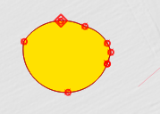
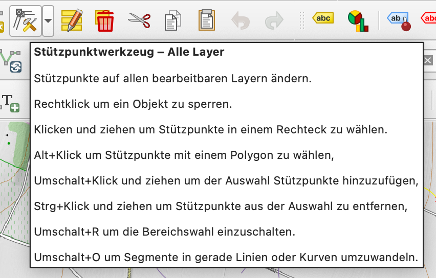
Mit dem Stützpunktwerkzeug können ausgewählte Stützpunkte gelöscht werden. Über die Pfeiltasten der Tastatur (oder direkt über Mausklick) können die verschiedenen Stützpunkte angewählt und mit Delete gelöscht werden.
225 - Stützpunkt einfügen¶
Mit dem Stützpunktwerkzeug können neue Stützpunkte hinzugefügt werden (über Doppelklick, oder über das "+"-Zeichen auf der Geometrie)
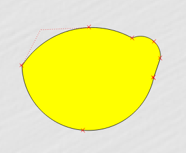
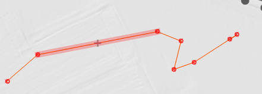
226 - Kopieren¶
Kopie der bestehenden Geometrie inkl. Attribute.
Entweder mit Aktionswerkzeug aus der Attributwerkzeugleiste. Falls “Objekt duplizieren und digitalisieren” ausgewählt wird, muss die Geometrie neu gezeichnet werden, nur die Attribute werden von der Ursprungsgeometrie übernommen. Bei “Objekt duplizieren” wird das Objekt exakt am selben Ort dupliziert wie die Ursprungsgeometrie. Das kopierte Objekt muss anschliessend verschoben werden (siehe unten).
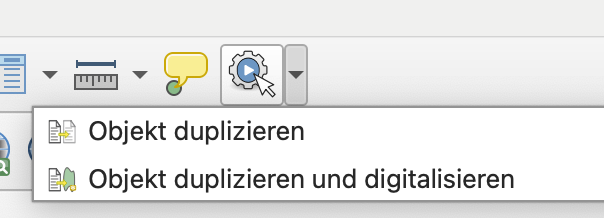
Oder über die Digitalisierungswerkzeugleiste und die Funktionen “Objekte kopieren”, “Objekte einfügen”. Anschliessend kann über die erweiterte Digitalisierungswerkzeugleiste das eingefügte Objekt verschoben werden.
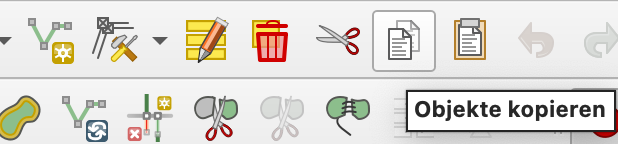
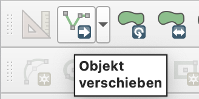
227 - Parallel kopieren¶
Wie unter 209 im Aktionswerkzeug “Objekt duplizieren” das gewählte Objekt duplizieren. In den erweiterten Digitalisierungswerkzeugen “Objekt verschieben” auswählen, den Parallelmodus aktivieren (siehe 199) und das Segment, zu welchem parallel eingefügt werden soll, anwählen.
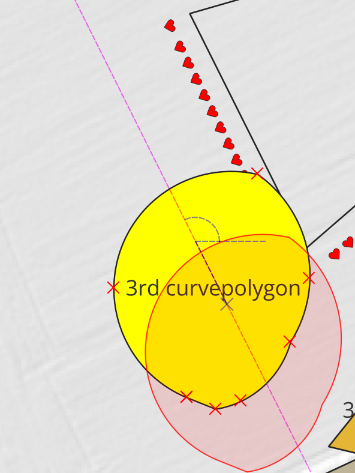
231 - Teilen: Gerade-Gerade¶
Erweiterte Digitalisierungswerkzeuge > Objekte zerteilen
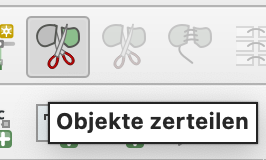
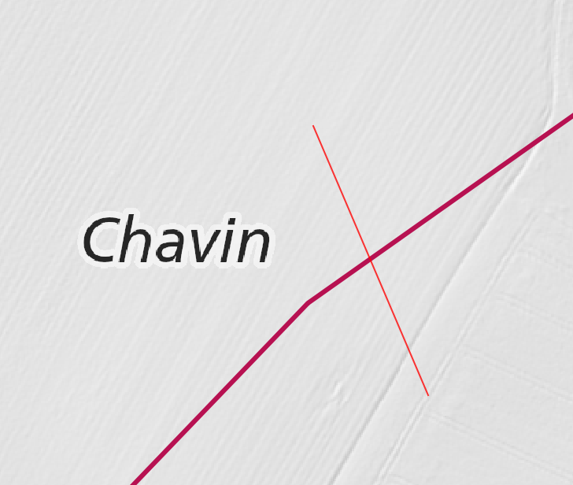
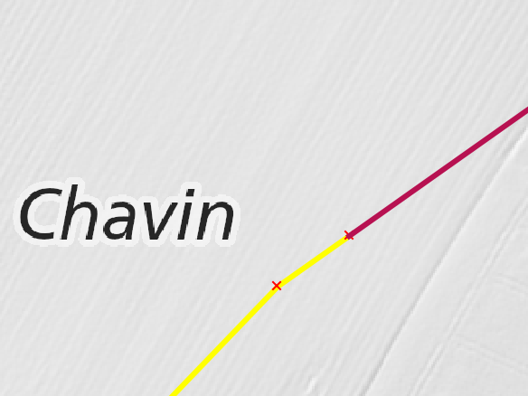
Oder, falls ein ganzes Layer durch ein anderes Layer zerteilt werden soll: Werkzeugkiste > Mit Linien teilen.
234 - Teilen: Gerade-Fläche¶
Wie 231.
236 - Teilen: Fläche-Fläche¶
Kann durch eine Polylinie gelöst werden (ausreichend laut interner Diskussion). Siehe 231.
237 - Löschen von Geometrien¶
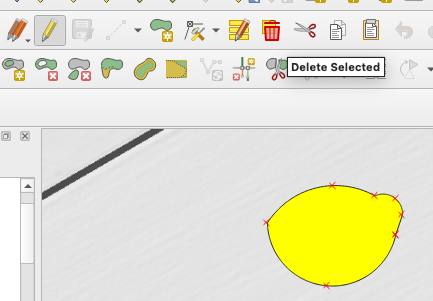
Im Editiermodus mit dem Selektierwerkzeug die zu löschende-n Geometrie-n auswählen und das Werkzeug “Ausgewähltes löschen” verwenden.
240-242 Messen¶
240 - Messen von Entfernung
241 - Messen von Winkel
242 - Messen von Fläche
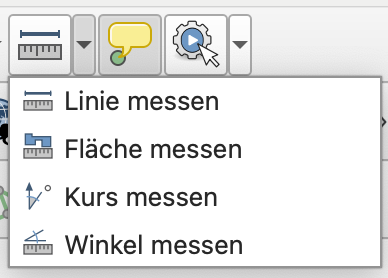
244-246, 250 Fangfunktionen¶
Einrastwerkzeugleiste aktivieren.
244 - Fangfunktion: Endpunkt
245 - Fangfunktion: Stützpunkt
246 - Fangfunktion: Schnittpunkt
250 - Fangfunktion: Zentrumspunkt
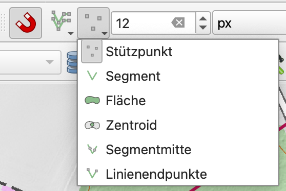
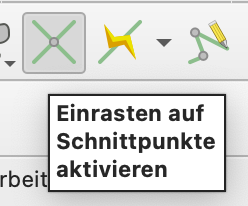
247 Fangfunktion: Erweiterter Schnittpunkt¶
Zwei Konstruktionslinien (parallel) zu den Geraden ziehen, für welche der erweiterte Schnittpunkt angezeigt werden soll. Auf den Schnittpunkt kann gesnappt werden.
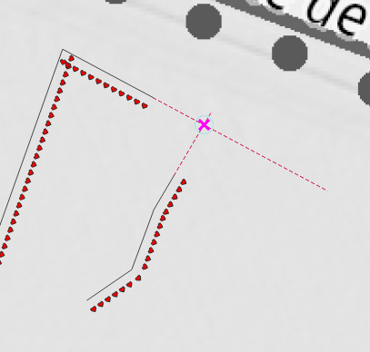
251 - Fangfunktion: Rechtwinkel/Quadrant¶
In der erweiterten Digitalisierung das Einrasten auf übliche Winkel aktivieren. Oder mit entsprechenden Konstruktionslinien arbeiten.
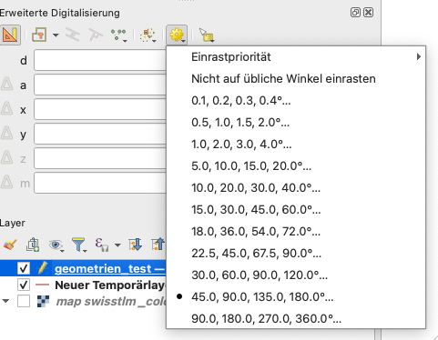
¶
252 - Fangfunktion: Kante/nächstgelegener Punkt¶
Snapping an Segment und Vertex aktivieren.
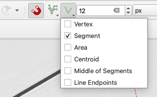
Um den nächstgelegenen Punkt an der Kante zu finden, in der erweiterten Digitalisierung den senkrechten Modus einschalten.
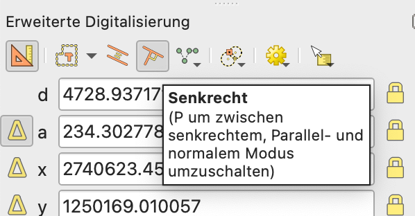
253 - Fangfunktion: Lotfusspunkt¶
Snapping an Segment und Vertex aktivieren.
Um den Lotfusspunkt zu finden, in der erweiterten Digitalisierung den senkrechten Modus einschalten.
254 - Fangfunktion: Schwerpunkt¶
Siehe 250.
255 - Fangfunktion für Punkte (z.B. Grenzpunkt)¶
Punkte gelten als Stützpunkte, man kann also darauf snappen. In den erweiterten Optionen können die Einstellungen für jedes Layer individuell vorgenommen werden. Es könnte also z.B. nur auf das Grenzpunktlayer gesnappt werden.
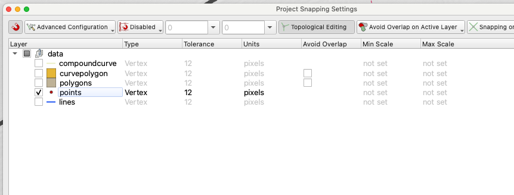
258 - Auswahl in Tabelle markiert Geometrie in Karte¶
Karte und Tabelle sind verknüpft.
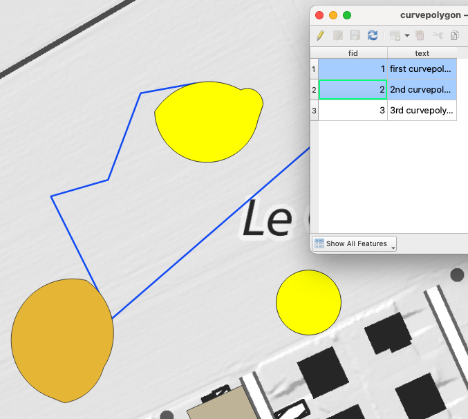
Auswahlwerkzeuge in der Tabelle:
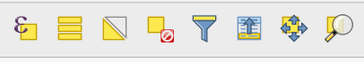
259 - Auswahl in Karte markiert in Tabelle¶
Siehe 258
Auswahlwerkzeuge in der Karte:
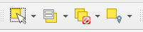
264 - Orientiertes Symbol: Parallel zu Gerade¶
Symbole sind sehr flexibel. Offsets parallel der Linie sind klar möglich. Symbole können auch rotiert werden.
Über das Layer Styling Panel (oder über die Eigenschaften des Layers > Symbologie) auf die Einstellungen zugreifen.
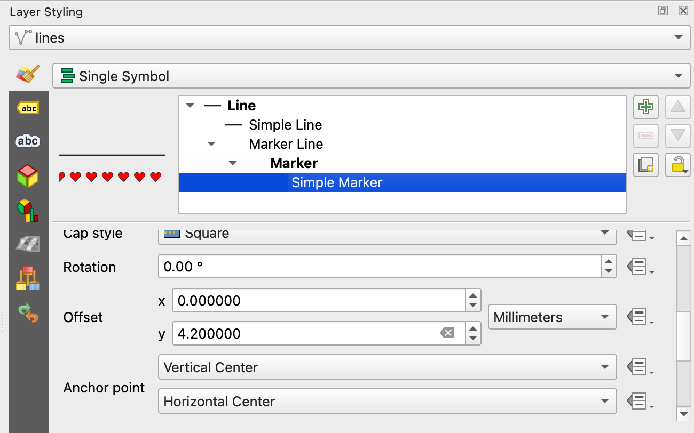
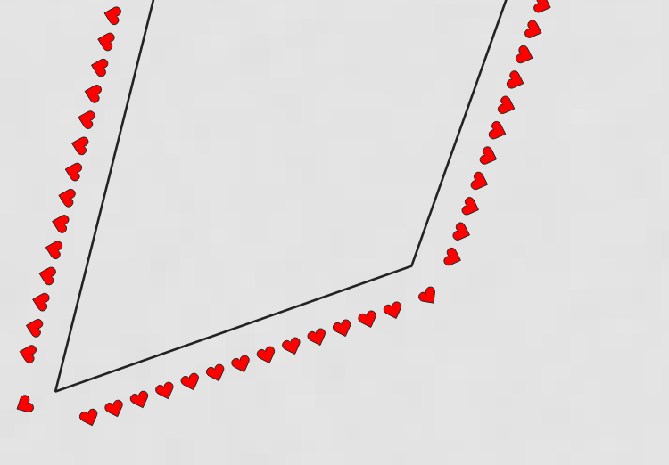
Wenn nötig können bei Markierungslinien und gestrichelten Linien einzelne Markierungen noch manuell justiert werden.
Zusätzlich sind über den Geometriegenerator sind fast keine Grenzen gesetzt.
265 - Orientiertes Symbol: Frei¶
Symbole sind sehr flexibel. Über den Geometriegenerator sind fast keine Grenzen gesetzt.
Falls Symbole komplett frei gesetzt werden sollen, kann man auf Annotations/Labels/zusätzliche Punktgeometrien zurückgreifen.
266 - Orientiertes Symbol: Drehwinkel eingeben¶
Symbole sind sehr flexibel. Symbole können auch rotiert werden.
268 - Orientierter Text: Parallel zu Gerade¶
Per default wird Text parallel der Linien gesetzt.
269 - Orientierter Text: Frei¶
Labels können zusätzlich über die Label Toolbar individuell platziert, rotiert, etc. werden.
270 - Orientierter Text: Drehwinkel eingeben¶
Rotation kann geometrieabhängig gemacht werden (Polygons), oder vertikal/horizontal. Bei Linien zusätzlich parallel der Linie, curved oder horizontal.
Oder wenn "Abstand vom Zentrum" als Modus ausgewählt wird: